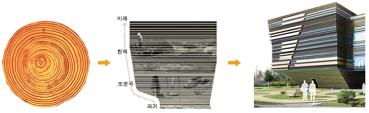
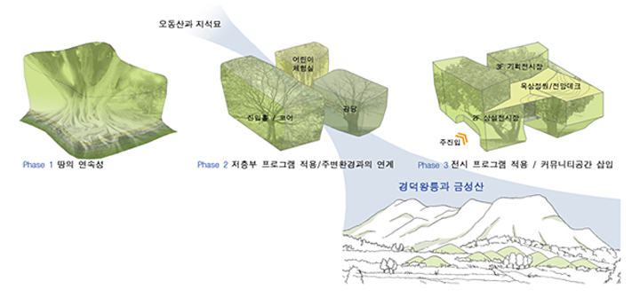

책으로 소통하는 행복한 도서관 의성군립도서관 Uiseong County Library

이용안내


계획의 주안점
의성군만의 문화성과 역사성이 잘 반영된 상징적 건축물 구현
박물관 교육과 문화적 기능을 함께 할 수 있는 복합문화센터로서의 박물관 추구
주변의 자연경관 및 고대유적과의 연계성 강화로 문화, 관광자원으로서의 박물관 창출
디자인목표
시간의 흔적을 머금고 자라나는 나무, TIME TREES
현재 남아있는 조문국의 흔적들은 미미하지만, 대지 전면에 있는 금성산 고분군을 통하여 그 찬란했던 역사를 재확인할 수 있게 된다.
의성조문국박물관은 이렇게 점점 잊혀져가는 역사의 흔적들을 담아내어, 의성군만의 독창적인 문화와 역사가 반영된 정신적, 실질적 랜드마크가 되어야 한다.
유구한 역사와 문화를 지닌 유서깊은 도시 의성, 그 시간성을 담으며 상징성을 부여하는 것, 고대 조문국의 흔적인 금성산 고분군과의 연계성을 가지는 것,
그리고 관람자들의 지속적인 방문이 이뤄질 수 있는 새로운 박물관이 되는 것, 이것들을 디자인 목표로 두었다.
디자인 목표
Communlcation-
과거
Old
&미래
New
-
커뮤니티
Community
&의성조문국박물관
Museum
-
전시물
Object
&관람자
Viewers
디자인 컨셉
Tree-
상징성
-
주변과의 연계성
-
전시 및 관람의
쾌적성
의성의 유구한 역사와 문화를 담은나무가 자란다
성장한다
흔적이 있다
쉼터를 제공한다
아름답다
변한다
-
상징성
- 역사성 : 살아온 시간의 흔적들을 보여주는 나이테처럼 유구한 문화와 역사를 가진 의성의 오랜 시간의 흔적들을 표현
- 지역성 : 의성에서 많이 나는 금(Gold)과 흑요석(Black)의 색채를 모티브로 한 재료 계획
- 미래지향성 : 선사시대부터 조문국, 현재 그리고 미래를 향해 성장하는 의성을 표현 상층부 매스에 세련됨, 상승감 등의 미래지향적인 상징적 성격 부여
 -
주변과의
연계성- 조형성 : 세 그루의 나무가 자라면서 서로 엉켜 마치 한그루처럼 자라는 이미지의 매스형태. 뿌리에서부터 위로 올라갈수록 우거진 나무형태와 같이 개방된 저층부 매스로 시각적 열림과 공공성 및 개방성 확보
- 축 Axis : 오동산과 지석묘에서 경덕왕릉을 향한 경관축 배치로 조망성 우수
- 주변 Context : 진입의 연속성, 오동산과 지석묘의 흐름, 경덕왕릉과 금성산의 흐름을 대지 내부로 끌어들여 조화시킴.
 -
전시 및 관람의
쾌적성- 쾌적성 : 홀 부분의 자연채광과 전시공간의 인공조명을 적절히 배합하여 쾌적한 전시환경 유도
- 조망성 : 명쾌한 관람동선 중간에 지석묘, 경덕왕릉과 금성산을 바라볼 수 있는 휴게공간을 구성해 관람객들이 지루하지 않도록 전시동선 구성
- 담당부서 : 토지관리팀
- 담당자 : 홍길동
- 연락처 : 054-123-1234
최종수정일 :